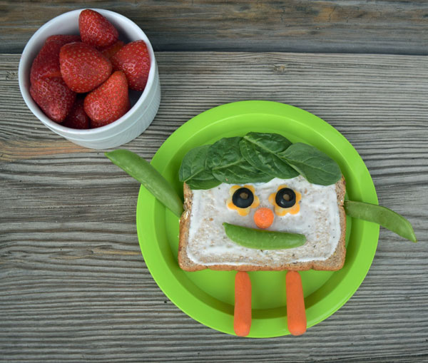

Silly Sandwich

Ingredients:
- 1 whole wheat English muffin, 1 whole wheat bagel or 2 slices of whole wheat bread
- 2 teaspoons ranch style dressing
- ¼ cup shredded cheese or one slice of cheese
- ½ cup grated or chopped vegetables such as red, yellow or green pepper, peas, beans, broccoli, celery, carrots, olives, tomatoes, summer squash
Directions
- Wash hands with soap and water.
- Spread 1 teaspoon ranch dressing on each half of English muffin, bagel or slice of bread.
- Top with the cheese and vegetables to create a silly face.